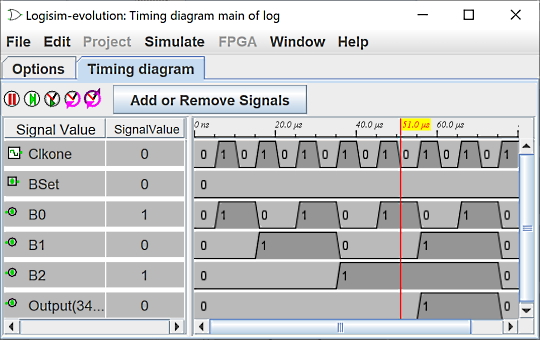

Chronogram
תתי סעיפים:
בחירת אות
חלון כרונוגרם
כדי להבין או לנפות באגים במעגל, זה לעתים קרובות מאוד שימושי להיות מסוגל לראות את האותות השונים בוויזואל דֶרֶך. זו המטרה של ציר הזמן. מודול זה מאפשר הקלטה של אותות בצורה גרפית או ב-a טבלת ערך בקובץ טקסט.

אתה יכול להיכנס למודול הרישום דרך התפריט | הדמיה |→| כרונוגרמה |. זה מעלה את חלון בחירת האות.
המעגל שלהלן הוא דוגמה להמחשה למודול התזמון.

אלו הם השעונים המשמשים כנהג להצגת אותות. הסימולציה מכירה שני שעונים מסוימים. אחד הוא ציווי ושמו sysclk ואחר אופציונלי ומשני בשם clk
הערה: זה הכרחי שיופיע במעגל שלך שעון בשם sysclk. זה יהיה לשמש כבסיס זמן על ידי מודול הכרונוגרמה. זה לא חייב להיות מחובר למעגל שלך. זה בפנים העיקרון המהיר ביותר ומוגדר למחזור עבודה של 1/1 טיק.
הבא: כרטיסיית הבחירה.